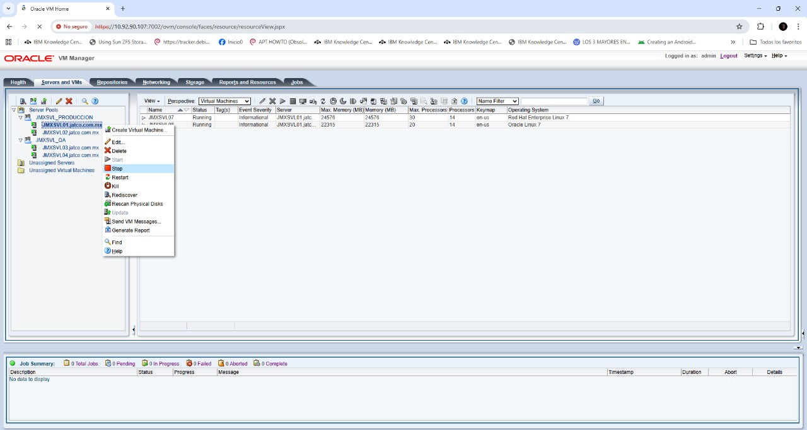

Script de Encendido y Apagado
Plataforma Oracle VM Server - Jatco México
⚙️ Índice de Contenidos
üîß Diagramas L√≥gicos
Ambiente de Producción y Q&A
üåê Direcciones IPv4
Configuración de red de la plataforma Oracle VM
⚡ Procedimiento de Encendido
Secuencia completa de inicio del sistema
üî¥ Procedimiento de Apagado
Secuencia segura de apagado del sistema
üîß Diagramas L√≥gicos del Ambiente
Diagrama Lógico de Ambiente de Producción
Diagrama Lógico de Ambiente de Q&A
üåê Direcciones IPv4 de la Plataforma Oracle VM Server
| IP | Gateway | DNS | Server (jatco.com.mx) | Descripción |
|---|---|---|---|---|
| 10.8.79.101 | 10.8.79.254 | 10.92.90.1 | JMXSVL01 | Oracle VM Server1 |
| 10.8.79.102 | 10.8.79.254 | 10.92.90.1 | JMXSVL02 | Oracle VM Server2 |
| 10.8.79.103 | 10.8.79.254 | 10.92.90.1 | JMXSVL03 | Oracle VM Server3 |
| 10.8.79.104 | 10.8.79.254 | 10.92.90.1 | JMXSVL04 | Oracle VM Server4 |
| 10.8.79.105 | 10.8.79.254 | 10.92.90.1 | JMXSVL05 | VM MIDDLEWARE QA |
| 10.8.79.106 | 10.8.79.254 | 10.92.90.1 | JMXSVL06 | VM DATABASE QA |
| 10.8.79.107 | 10.8.79.254 | 10.92.90.1 | JMXSVL07 | VM MIDDLEWARE PROD |
| 10.8.79.108 | 10.8.79.254 | 10.92.90.1 | JMXSVL08 | VM DATABASE N1 PROD |
| 10.8.79.109 | 10.8.79.254 | 10.92.90.1 | JMXSVL09 | VM DATABASE N2 PROD |
| 10.8.79.110 | 10.8.79.254 | 10.92.90.1 | JMXSVL06-VIP | IP RAC PRODUCTION |
| 10.8.79.111 | 10.8.79.254 | 10.92.90.1 | JMXSVL06-VIP | IP RAC PRODUCTION |
| 10.8.79.112 | 10.8.79.254 | 10.92.90.1 | JMXSVL-SCAN | IP RAC PRODUCTION |
| 10.8.79.113 | 10.8.79.254 | 10.92.90.1 | JMXSVL-SCAN | IP RAC PRODUCTION |
| 10.8.79.114 | 10.8.79.254 | 10.92.90.1 | JMXSVL-SCAN | IP RAC PRODUCTION |
| 10.8.79.115 | 10.8.79.254 | 10.92.90.1 | JMXSVH19T | Server JEMS windows S1 |
| 10.8.79.116 | 10.8.79.254 | 10.92.90.1 | JMXSVL08-VIP | IP RAC Production |
| 10.8.79.117 | 10.8.79.254 | 10.92.90.1 | JMXSVL09-VIP | IP RAC Production |
| 10.8.79.118 | 10.8.79.254 | 10.92.90.1 | JMXSVL-SCAN | IP RAC Production |
| 10.8.79.119 | 10.8.79.254 | 10.92.90.1 | JMXSVL-SCAN | IP RAC Production |
| 10.8.79.120 | 10.8.79.254 | 10.92.90.1 | JMXSVL-SCAN | IP RAC Production |
| 192.168.100.108 | ----------- | ----------- | JMXSVL08-PRIV | Heartbeat RAC |
| 192.168.100.109 | ----------- | ----------- | JMXSVL09-PRIV | Heartbeat RAC |
| 10.92.90.107 | 10.92.90.254 | 10.92.90.1 | JMXSVOVMM | OVM Administrator |
| 192.168.200.126 | 192.168.200.254 | 10.92.90.1 | iLo | HPE iLo Server JMXSVL01 |
| 192.168.200.127 | 192.168.200.254 | 10.92.90.1 | iLo | HPE iLo Server |
| 192.168.200.128 | 192.168.200.254 | 10.92.90.1 | iLo | HPE iLo Server |
| 192.168.200.129 | 192.168.200.254 | 10.92.90.1 | iLo | HPE iLo Server |
⚡ Orden de Encendido
1. Encender los Servidores (Físicamente/iLo)
Aplica para Servers HP: JMXSVL01, JMXSVL02, JMXSVL03 y JMXSVL04
-
Acceder con el usuario Administrator
-
En la sección de Power & Thermal
Seleccionar la acción a realizar, en este caso encendido o reiniciar.
-
Validación de que OVM Server esté disponible, desde la consola de iLo

2. Encendido de VM de Oracle VM Manager en granja de VMware
-
Acceder a la granja de VMware y ubicar la VM de OVM Manager
Una vez ubicada con el botón derecho en la barra de Acciones, ubicar Energía y hacer click en Encender.
-
Validar que la acción finalice exitosa, mediante la consola remota desde VMware
-
Acceder vía web a la dirección: https://10.92.90.107:7002/ovm/console
Se deberá validar el estado del Firewall de Linux.
Acceder vía ssh con el usuario root a la IP 10.92.90.107
3. Encendido de VMs de BD y Middleware de Prod y Q&A
-
Acceder a la siguiente dirección: https://10.92.90.107:7002/ovm/console
Deberá observar la siguiente pantalla
-
Proceder a encender dentro de cada servidor las VMs de BD y QA
Aplica para los Servidores Virtuales:
üè≠ Ambiente de Producci√≥n
Orden de arrancado:
- JMXSVL07
- JMXSVL08
- JMXSVL09
üî¨ Ambiente de Q&A
Orden de arrancado:
- JMXSVL05
- JMXSVL06
-
Click de botón derecho sobre la VM y seleccionar la opción de "Start"
-
Verificar que la acción se ejecute correctamente mediante la opción de Launch console
4. Levantamiento de BD en ambientes de Producción
-
Nos conectamos a nuestro servidor en Producción
ssh -l root 10.8.79.108
ó
ssh -l root 10.8.79.109 -
Validar los servicios del cluster con el siguiente comando
-
En caso de que los servicios no estén ONLINE se deben levantar de manera manual
crsctl start cluster -all
-
Una vez validado el cluster se deben levantar las Bases de Datos
Nos conectamos con el usuario Oracle y ejecutar:
Puede ser en cualquier Nodo 08 u Nodo 09 para Producción
srvctl start database -d jmxsrvctl start database -d jemsüè≠ Distribuci√≥n de BDs en Producci√≥n
HOST IP DATABASE JMXSVL08 10.8.79.108 jmx1 jems1 JMXSVL09 10.8.79.109 jmx2 jems2 -
Las aplicaciones de Middleware se levantan automáticamente
Las aplicaciones de Middleware se levantan en automático con el Sistema Operativo, los servicios el detenerlos u reiniciarlos varían de los productos. La recomendación es en caso de fallo, reiniciar la VM en ambos Ambientes de Producción.
üîß Aplicaciones configuradas en Producci√≥n
- HULFT
- Microfocus Cobol
Para validar que se estén ejecutando correctamente:
Si está habilitado validar que se estén ejecutando:
Para iniciar el servicio de Microfocus y Hulft se debe ejecutar, en caso de que no levanten de manera automática:
./hulsndd
./hulrcvd
./hulobsd
5. Levantamiento de BD en ambientes de Q&A
-
Nos conectamos a nuestro servidor en Q&A
ssh -l root 10.8.79.106
-
Validar los servicios del cluster con el siguiente comando
/u02/app/11.2.0/grid/bin/crsctl stat res -t

-
En caso de que los servicios no estén ONLINE se deben levantar manualmente
/u02/app/11.2.0/grid/bin/crsctl start cluster -all
-
Una vez validado el cluster se deben levantar las Bases de Datos
Nos conectamos con el usuario Oracle y ejecutar:
export ORACLE_SID=jmxdev
sqlplus / as sysdba
SQL> startup
SQL> exitexport ORACLE_SID=jmxtst
sqlplus / as sysdba
SQL> startup
SQL> exitexport ORACLE_SID=jmxtry
sqlplus / as sysdba
SQL> startup
SQL> exitexport ORACLE_SID=jmxsys
sqlplus / as sysdba
SQL> startup
SQL> exitüî¨ Distribuci√≥n de BDs en Q&A
HOST IP DATABASE JMXSVL06 10.8.79.106 jmxdev jems jmxtst jmxtry jmxsys -
Las aplicaciones de Middleware en Q&A
Las aplicaciones de Middleware se levantan automáticamente con el Sistema Operativo, los servicios el detenerlos u reiniciarlos varían de los productos . La recomendación es en caso de fallo, reiniciar la VM en QA.
üîß Aplicaciones configuradas en Q&A
- HULFT
- Microfocus Cobol
Nos conectamos a nuestro servidor en producción:
ssh -l root 10.8.79.107La forma de validar es la siguiente:
systemctl list-unit-files --type service --all | grep -i MFSSi está habilitado validar que se estén ejecutando:
systemctl status MFSafeNet.servicePara iniciar el servicio se debe ejecutar:
systemctl start MFSafeNet.servicecd /usr/local/HULFT/bin
./hulsndd
./hulrcvd
./hulobsd
üî¥ Orden de Apagado
1. Apagado de VMs de BD y Middleware de Prod y Q&A
-
Acceder a la siguiente dirección: https://10.92.90.107:7002/ovm/console
Deberá observar la siguiente pantalla
-
Proceder a apagar dentro de cada servidor las VMs de BD y QA
Aplica para los Servidores Virtuales:
üè≠ Ambiente de Producci√≥n
Orden de apagado:
- JMXSVL07
- JMXSVL08
- JMXSVL09
üî¨ Ambiente de Q&A
Orden de apagado:
- JMXSVL05
- JMXSVL06
-
Click de botón derecho sobre la VM y seleccionar la opción de "Stop"
Proceder a apagar dentro de cada servidor
Aplica para los Servidores Físicos:
üè≠ Ambiente de Producci√≥n
Orden de apagado:
- JMXSVL01.jatco.om.mx
- JMXSVL02.jatco.om.mx
üî¨ Ambiente de Q&A
Orden de apagado:
- JMXSVL03.jatco.om.mx
- JMXSVL04.jatco.om.mx
-
Click de botón derecho sobre Fisico y seleccionar la opción de "Stop"

-
2. Baja de BD en ambientes de Producción (De manera manual)
-
Nos conectamos a nuestro servidor en Producción
ssh -l root 10.8.79.108
ó
ssh -l root 10.8.79.109 -
Baja de las Bases de Datos
Nos conectamos con el usuario Oracle y ejecutar:
Para validar el status de nuestra base de datos ejecutamos lo siguiente:
srvctl status database -d jmxPuede ser en cualquier Nodo 08 u Nodo 09 para Producción:
srvctl stop database -d jmxsrvctl stop database -d jems -
Para validar el status de una instancia en específico, ejecutamos lo siguiente:
srvctl status instance -d jmx -i jmx1
srvctl status instance -d jmx -i jmx2srvctl status instance -d jems -i jems1
srvctl status instance -d jems -i jems2 -
Para detener una instancia en específico, ejecutamos lo siguiente:
srvctl stop instance -d jmx -i jmx1
srvctl stop instance -d jmx -i jmx2srvctl stop instance -d jems -i jems1
srvctl stop instance -d jems -i jems2 -
Validar los servicios del cluster
Para tomar evidencia del antes y después de la baja de BDs:
crsctl stat res -t -
Detener todos los servicios de manera manual
crsctl stop cluster -all
-
Deshabilitar inicio automático (opcional)
Si se tienen actividades de mantenimiento y no se desea que el servicio de Clusterware se inicien de manera automática:
crsctl disable crsUna vez terminado el mantenimiento, para habilitar el inicio automático:
crsctl enable crs
crsctl start crs
3. Baja de Aplicaciones en Producción
-
Las aplicaciones de Middleware se bajan automáticamente
Las aplicaciones de Middleware se bajan automáticamente con el Sistema Operativo, los servicios el detenerlos u reiniciarlos varían de los productos . La recomendación es en caso de fallo, reiniciar la VM en ambos Ambientes de Producción.
Nos conectamos a nuestro servidor en Producción:
ssh -l root 10.8.79.107üîß Aplicaciones en Producci√≥n
- HULFT
- Microfocus Cobol
En caso de querer detenerlos manualmente:
systemctl stop MFSafeNet.servicecd /usr/local/HULFT/bin
./utlkillsnd
./utlkillrcv
./utlkillobs
4. Baja de BD en ambientes de QA (De manera manual)
-
Nos conectamos a nuestro servidor en Q&A
ssh -l root 10.8.79.106
-
Validar los servicios del cluster
/u02/app/11.2.0/grid/bin/crsctl stat res -t
-
Apagar las Bases de Datos
Nos conectamos con el usuario Oracle y ejecutar:
export ORACLE_SID=jmxdev
sqlplus / as sysdba
SQL> shutdown immediate
SQL> exitexport ORACLE_SID=jmxtst
sqlplus / as sysdba
SQL> shutdown immediate
SQL> exitexport ORACLE_SID=jmxtry
sqlplus / as sysdba
SQL> shutdown immediate
SQL> exitexport ORACLE_SID=jmxsys
sqlplus / as sysdba
SQL> shutdown immediate
SQL> exit -
Detener el cluster
/u02/app/11.2.0/grid/bin/crsctl stop cluster -all
-
Baja de aplicaciones de Middleware en Q&A
Las aplicaciones de Middleware se detienen automáticamente con el Sistema Operativo, los servicios el detenerlos u reiniciarlos varían de los productos. La recomendación es en caso de fallo, reiniciar la VM en QA.
Nos conectamos a nuestro servidor en Q&A:
ssh -l root 10.8.79.105üîß Aplicaciones en Q&A
- HULFT
- Microfocus Cobol
En caso de querer detenerlos manualmente:
systemctl stop MFSafeNet.servicecd /usr/local/HULFT/bin
./utlkillsnd
./utlkillrcv
./utlkillobs
-
Nos conectamos a nuestro servidor en Producción